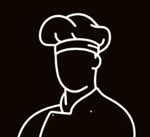

<div class="file-fullscreen">
    <div class="recipe-viewer">
        <!-- Close Button -->
        <a href="javascript:history.back()" class="back-button">
            <!-- <svg xmlns="http://www.w3.org/2000/svg" (click)="goBack()" width="40" height="40" viewBox="0 0 24 24" fill="#ffa500">
                <path d="M15.41 7.41L14 6l-6 6 6 6 1.41-1.41L10.83 12z" />
            </svg> -->
            <div (click)="goBack()" class="back-button-X">X</div>
        </a>

        <!-- Loading Recipe State -->
        @if(isLoadingRecipe) {
        <div class="loading-container">
            <div class="loading-spinner"></div>
            <p>טוען מתכון מהשרת...</p>
        </div>}

        <!-- Error State -->
        @if(error && !isLoadingRecipe){
        <div class="error-container">
            <div class="error-content">
                <i class="fas fa-exclamation-triangle error-icon"></i>
                <h3>שגיאה בטעינת המתכון</h3>
                <p>{{ error }}</p>
                <button class="retry-button" (click)="retryLoading()">
                    <i class="fas fa-redo"></i>
                    נסה שוב
                </button>
            </div>
        </div>}

        <!-- Recipe Content (when loaded successfully) -->
        @if(recipe && !isLoadingRecipe && !error){
        <div>
            <!-- Recipe Header -->
            <div class="recipe-header">
                <div class="recipe-title-area">
                    <h1 class="recipe-main-title">{{ recipe.title }}</h1>
                </div>

                <div class="recipe-actions">
                </div>
            </div>

            <!-- Recipe Content Wrapper -->
            <div class="recipe-content-wrapper">
                <!-- Chef/Recipe Image Container -->
                <div class="recipe-chef-container">
                    <div class="chef-image-wrapper">

                        <!-- Default chef image or recipe image -->
                        @if(!recipeImage){
                        
                        @if(recipeImage){
                        }
                        }
                    </div>

                    <!-- Recipe Info Actions -->
                    <div class="recipe-info">
                        <div class="info-item" (click)="onDownloadRecipe()" style="cursor: pointer;">
                            <i class="fas fa-download info-icon"></i>
                            <span>הורדת המתכון</span>
                        </div>
                        <div class="info-item" (click)="onEmailRecipe(this.recipe)" style="cursor: pointer;">
                            <i class="fas fa-envelope info-icon"></i>
                            <span>שליחה למייל</span>
                        </div>
                    </div>
                </div>

                <!-- Recipe Content -->
                <div class="recipe-content">
                    <!-- Loading Content State -->
                    @if(isLoading){
                    <div class="loading-container">
                        <div class="loading-spinner"></div>
                        <p>טוען את תוכן המתכון...</p>
                    </div>}

                    <!-- Recipe Document -->
                    @if(!isLoading){
                    <div #recipeContent class="recipe-document" [class.rtl-content]="direction === 'rtl'"
                        [class.ltr-content]="direction === 'ltr'" [style.direction]="direction"
                        [innerHTML]="htmlContent">
                    </div>
                    }
                </div>
            </div>

            <!-- Recipe Footer -->
            <div class="recipe-footer">
                <div class="footer-decoration">
                    <span class="decoration-dot"></span>
                    <span class="decoration-line"></span>
                    <i class="fas fa-utensils footer-icon"></i>
                    <svg xmlns="http://www.w3.org/2000/svg" width="24" height="24" viewBox="0 0 24 24" fill="none"
                        stroke="currentColor" stroke-width="2" stroke-linecap="round" stroke-linejoin="round"
                        class="logo-icon">
                        <path
                            d="M17 21a1 1 0 0 0 1-1v-5.35c0-.457.316-.844.727-1.041a4 4 0 0 0-2.134-7.589 5 5 0 0 0-9.186 0 4 4 0 0 0-2.134 7.588c.411.198.727.585.727 1.041V20a1 1 0 0 0 1 1Z" />
                        <path d="M6 17h12" />
                    </svg>
                    <span class="decoration-line"></span>
                    <span class="decoration-dot"></span>
                </div>
            </div>
        </div>
        }
    </div>
</div>